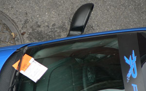

The ‘alarming’ driver series continues
Dear 11th Street Parker,
For at least two nights this week the alarm of your blue “racing” Ford Focus has disturbed the sleeping residents of this block. It is sometimes tripped by a passing truck and other times without any apparent provocation.
If you think that this alarm is making your car safe, you’re wrong. It is a nuisance only. As with all car alarms in Manhattan, this one provokes those that hear it simply to roll over, cover their ears, and curse the womb that bore you. If we did chance to see some hood molesting your blue “racing” Ford Focus that has so impeded our nights and mornings, we’d be more likely to give him a thumbs up than intervene.
In sum, we ask that you get your car the hell off our block or at least disable its malfunctioning alarm. The situation can not continue.
Yours in annoyance,
Doctor Barnett
Late morning update
While I was passive-aggressively printing the above note to leave under the car’s wiper, MrLittlePants (who is out of my league) was on the street explaining to the guy (who was present, as parking is illegal until 9:30) that his alarm was ruining our lives. This Marylander said he wasn’t aware of the disturbance he had caused.
He must have left after that, because I later noticed a little note from the NYPD on his windshield. See, they can get you until 9:30, even if the street cleaner has already passed. There really is no free parking in New York, just an incredibly inefficient and unnecessarily deceptive means of collection.

Add a comment